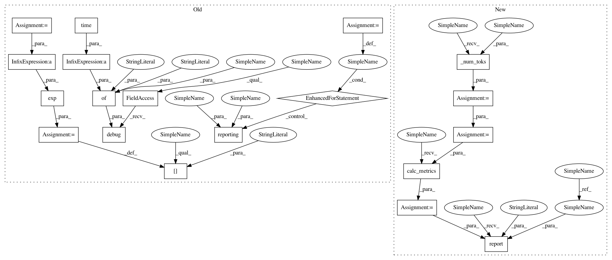

6aad1de658a933d3fa376f7fe9abf419da8a8bd2,python/baseline/tf/lm/train.py,LanguageModelTrainerTf,test,#LanguageModelTrainerTf#Any#Any#Any#,79
Before Change
if xfer_state:
state = vals["final_state"]
total_loss += loss
iters += ts.nctx
step += 1
self.log.debug({"phase": phase, "time": time.time() - start})
metrics["avg_loss"] = total_loss / iters
metrics["perplexity"] = np.exp(total_loss / iters)
for reporting in reporting_fns:
reporting(metrics, epochs, phase)
return metrics
@register_training_func("lm")
After Change
vals = self.model.sess.run(fetches, feed_dict)
loss = vals["loss"]
toks = self._num_toks(batch_dict)
if xfer_state:
state = vals["final_state"]
total_loss += loss * toks
total_toks += toks
metrics = self.calc_metrics(total_loss, total_toks)
self.report(
epochs, metrics, start,
phase, "EPOCH", reporting_fns
)
return metrics
@register_training_func("lm")
In pattern: SUPERPATTERN
Frequency: 3
Non-data size: 19
Instances
Project Name: dpressel/mead-baseline
Commit Name: 6aad1de658a933d3fa376f7fe9abf419da8a8bd2
Time: 2018-11-26
Author: blester125@users.noreply.github.com
File Name: python/baseline/tf/lm/train.py
Class Name: LanguageModelTrainerTf
Method Name: test
Project Name: dpressel/mead-baseline
Commit Name: 6aad1de658a933d3fa376f7fe9abf419da8a8bd2
Time: 2018-11-26
Author: blester125@users.noreply.github.com
File Name: python/baseline/tf/lm/train.py
Class Name: LanguageModelTrainerTf
Method Name: test
Project Name: dpressel/mead-baseline
Commit Name: 6aad1de658a933d3fa376f7fe9abf419da8a8bd2
Time: 2018-11-26
Author: blester125@users.noreply.github.com
File Name: python/baseline/pytorch/lm/train.py
Class Name: LanguageModelTrainerPyTorch
Method Name: test
Project Name: dpressel/mead-baseline
Commit Name: 6aad1de658a933d3fa376f7fe9abf419da8a8bd2
Time: 2018-11-26
Author: blester125@users.noreply.github.com
File Name: python/baseline/dy/lm/train.py
Class Name: LanguageModelTrainerDynet
Method Name: test